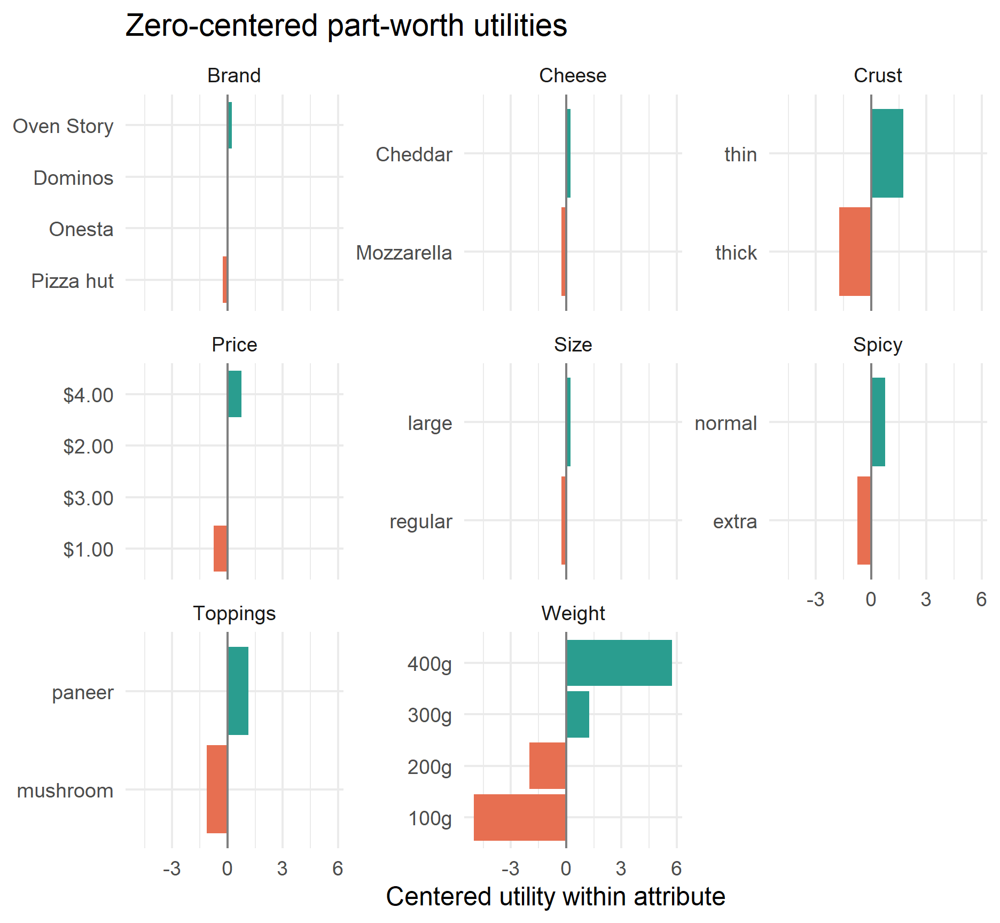
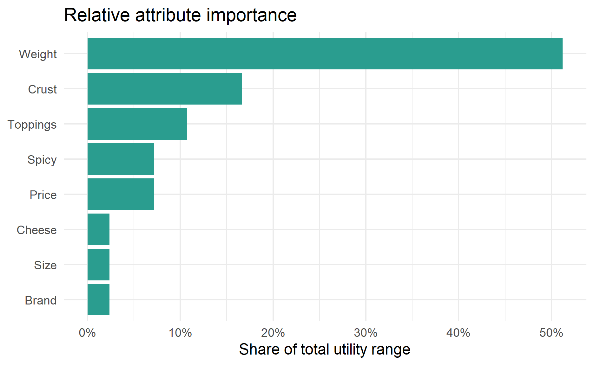
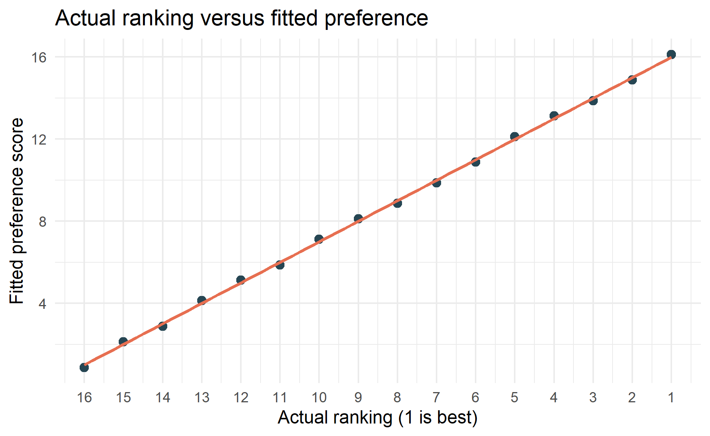

Photo by holigil 27 on Unsplash
What is conjoint analysis?
Conjoint analysis is a survey and modelling technique used to understand how people make trade-offs between product or service features. Instead of asking respondents to rate each feature separately, conjoint analysis presents complete product profiles. A profile might combine brand, price, size, crust, toppings, and other features. The respondent then ranks, rates, or chooses between those profiles.
The vocabulary is important:
- Attribute: a product feature, such as
price,brand, orcrust. - Level: a possible value of an attribute, such as
$1.00,$2.00, orthin. - Profile: one complete product concept made from several attribute levels.
- Part-worth utility: the estimated contribution of a level to overall preference.
- Attribute importance: how much an attribute can move preference, usually based on the difference between its best and worst part-worth utilities.
This post uses a small pizza dataset to demonstrate the coding workflow. The dataset is a full-profile ranking-based conjoint example: each row is one pizza profile, and the outcome is that profile’s rank. This is different from choice-based conjoint, where respondents repeatedly choose one option from a set of alternatives.
The example uses the Kaggle dataset Pizza Attributes Dataset for Conjoint Analysis. Because the dataset has only 16 profiles, the results should be treated as a coding demonstration rather than a reliable market research conclusion.
Coding the Analysis
Load the Data
The data contains 16 pizza profiles. Each profile has several attributes and one ranking value. A lower ranking means the pizza is more preferred, so rank 1 is the best profile.
pizza_raw <-
readr::read_csv("data/pizza_data.csv") %>%
janitor::clean_names()
pizza_raw %>%
kable() %>%
kable_styling(full_width = FALSE)| brand | price | weight | crust | cheese | size | toppings | spicy | ranking |
|---|---|---|---|---|---|---|---|---|
| Dominos | $1.00 | 100g | thin | Mozzarella | regular | paneer | normal | 11 |
| Pizza hut | $3.00 | 100g | thin | Cheddar | large | mushroom | normal | 12 |
| Onesta | $4.00 | 200g | thin | Mozzarella | regular | mushroom | normal | 9 |
| Pizza hut | $4.00 | 400g | thick | Cheddar | regular | paneer | normal | 2 |
| Pizza hut | $2.00 | 300g | thin | Mozzarella | regular | mushroom | extra | 8 |
| Pizza hut | $1.00 | 200g | thick | Mozzarella | large | paneer | extra | 13 |
| Onesta | $3.00 | 300g | thick | Mozzarella | large | paneer | normal | 7 |
| Dominos | $4.00 | 300g | thin | Cheddar | large | paneer | extra | 4 |
| Dominos | $2.00 | 400g | thick | Mozzarella | large | mushroom | normal | 5 |
| Oven Story | $4.00 | 100g | thick | Mozzarella | large | mushroom | extra | 16 |
| Onesta | $1.00 | 400g | thin | Cheddar | large | mushroom | extra | 3 |
| Oven Story | $2.00 | 200g | thin | Cheddar | large | paneer | normal | 6 |
| Oven Story | $1.00 | 300g | thick | Cheddar | regular | mushroom | normal | 10 |
| Onesta | $2.00 | 100g | thick | Cheddar | regular | paneer | extra | 15 |
| Oven Story | $3.00 | 400g | thin | Mozzarella | regular | paneer | extra | 1 |
| Dominos | $3.00 | 200g | thick | Cheddar | regular | mushroom | extra | 14 |
Prepare the Variables
The raw ranking variable is lower-is-better. For modelling, I convert it into preference_score, where higher values mean stronger preference. This makes the coefficients easier to interpret: positive utilities increase predicted preference.
I also set the factor reference levels deliberately. This is better than relying on R’s default alphabetical ordering, because every coefficient is interpreted relative to the reference level.
attribute_cols <- c(
"brand", "price", "weight", "crust", "cheese", "size", "toppings", "spicy"
)
pizza <-
pizza_raw %>%
mutate(
brand = factor(brand, levels = c("Dominos", "Onesta", "Oven Story", "Pizza hut")),
price = factor(price, levels = c("$1.00", "$2.00", "$3.00", "$4.00")),
weight = factor(weight, levels = c("100g", "200g", "300g", "400g")),
crust = factor(crust, levels = c("thick", "thin")),
cheese = factor(cheese, levels = c("Cheddar", "Mozzarella")),
size = factor(size, levels = c("large", "regular")),
toppings = factor(toppings, levels = c("mushroom", "paneer")),
spicy = factor(spicy, levels = c("extra", "normal")),
preference_score = max(ranking) + 1 - ranking
)
pizza %>%
select(all_of(attribute_cols), ranking, preference_score) %>%
arrange(ranking) %>%
kable() %>%
kable_styling(full_width = FALSE)| brand | price | weight | crust | cheese | size | toppings | spicy | ranking | preference_score |
|---|---|---|---|---|---|---|---|---|---|
| Oven Story | $3.00 | 400g | thin | Mozzarella | regular | paneer | extra | 1 | 16 |
| Pizza hut | $4.00 | 400g | thick | Cheddar | regular | paneer | normal | 2 | 15 |
| Onesta | $1.00 | 400g | thin | Cheddar | large | mushroom | extra | 3 | 14 |
| Dominos | $4.00 | 300g | thin | Cheddar | large | paneer | extra | 4 | 13 |
| Dominos | $2.00 | 400g | thick | Mozzarella | large | mushroom | normal | 5 | 12 |
| Oven Story | $2.00 | 200g | thin | Cheddar | large | paneer | normal | 6 | 11 |
| Onesta | $3.00 | 300g | thick | Mozzarella | large | paneer | normal | 7 | 10 |
| Pizza hut | $2.00 | 300g | thin | Mozzarella | regular | mushroom | extra | 8 | 9 |
| Onesta | $4.00 | 200g | thin | Mozzarella | regular | mushroom | normal | 9 | 8 |
| Oven Story | $1.00 | 300g | thick | Cheddar | regular | mushroom | normal | 10 | 7 |
| Dominos | $1.00 | 100g | thin | Mozzarella | regular | paneer | normal | 11 | 6 |
| Pizza hut | $3.00 | 100g | thin | Cheddar | large | mushroom | normal | 12 | 5 |
| Pizza hut | $1.00 | 200g | thick | Mozzarella | large | paneer | extra | 13 | 4 |
| Dominos | $3.00 | 200g | thick | Cheddar | regular | mushroom | extra | 14 | 3 |
| Onesta | $2.00 | 100g | thick | Cheddar | regular | paneer | extra | 15 | 2 |
| Oven Story | $4.00 | 100g | thick | Mozzarella | large | mushroom | extra | 16 | 1 |
Inspect the Design
A conjoint design should contain variation across attribute levels. This quick table checks how often each level appears.
level_summary <-
pizza %>%
select(all_of(attribute_cols)) %>%
pivot_longer(everything(), names_to = "attribute", values_to = "level") %>%
count(attribute, level, name = "n_profiles") %>%
arrange(attribute, level)
level_summary %>%
kable() %>%
kable_styling(full_width = FALSE)| attribute | level | n_profiles |
|---|---|---|
| brand | Dominos | 4 |
| brand | Onesta | 4 |
| brand | Oven Story | 4 |
| brand | Pizza hut | 4 |
| cheese | Cheddar | 8 |
| cheese | Mozzarella | 8 |
| crust | thick | 8 |
| crust | thin | 8 |
| price | $1.00 | 4 |
| price | $2.00 | 4 |
| price | $3.00 | 4 |
| price | $4.00 | 4 |
| size | large | 8 |
| size | regular | 8 |
| spicy | extra | 8 |
| spicy | normal | 8 |
| toppings | mushroom | 8 |
| toppings | paneer | 8 |
| weight | 100g | 4 |
| weight | 200g | 4 |
| weight | 300g | 4 |
| weight | 400g | 4 |
The design is balanced in the sense that each level appears multiple times. However, the dataset is still very small. A real conjoint study would normally collect responses from many people and include repeated choice, ranking, or rating tasks.
Estimate Part-Worth Utilities
For this ranking-based example, I use an additive linear model. The model says that a profile’s preference score is the sum of the utilities from its attribute levels.
conjoint_fit <-
lm(
preference_score ~ brand + price + weight + crust + cheese + size + toppings + spicy,
data = pizza
)
model_diagnostics <-
tibble(
n_profiles = nrow(pizza),
n_model_parameters = length(coef(conjoint_fit)),
residual_degrees_of_freedom = df.residual(conjoint_fit),
r_squared = summary(conjoint_fit)$r.squared,
adjusted_r_squared = summary(conjoint_fit)$adj.r.squared
)
model_diagnostics %>%
mutate(across(c(r_squared, adjusted_r_squared), \(x) round(x, 3))) %>%
kable() %>%
kable_styling(full_width = FALSE)| n_profiles | n_model_parameters | residual_degrees_of_freedom | r_squared | adjusted_r_squared |
|---|---|---|---|---|
| 16 | 15 | 1 | 0.999 | 0.989 |
This diagnostic table is important. The model uses 15 parameters to explain only 16 profiles, leaving 1 residual degree of freedom. That is why the R-squared is extremely high. The model is useful for learning the workflow, but the p-values and confidence intervals should not be treated as strong evidence.
Check the Reference Levels
The intercept represents the predicted preference score for the reference profile. The coefficients show changes from that reference profile.
reference_profile <-
map_dfr(attribute_cols, \(x) {
tibble(
attribute = x,
reference_level = levels(pizza[[x]])[1]
)
})
reference_profile %>%
kable() %>%
kable_styling(full_width = FALSE)| attribute | reference_level |
|---|---|
| brand | Dominos |
| price | $1.00 |
| weight | 100g |
| crust | thick |
| cheese | Cheddar |
| size | large |
| toppings | mushroom |
| spicy | extra |
The reference pizza is therefore Dominos, $1.00, 100g, thick crust, Cheddar, large size, mushroom topping, and extra spicy. Every estimated utility is relative to these reference levels.
Tidy the Model Coefficients
The raw summary() output is useful for diagnostics, but it is not the clearest way to present conjoint results. I tidy the coefficients and omit p-values from the main table because this example is too small for inferential claims.
coef_table <-
broom::tidy(conjoint_fit) %>%
filter(term != "(Intercept)") %>%
mutate(
attribute = case_when(
str_starts(term, "brand") ~ "brand",
str_starts(term, "price") ~ "price",
str_starts(term, "weight") ~ "weight",
str_starts(term, "crust") ~ "crust",
str_starts(term, "cheese") ~ "cheese",
str_starts(term, "size") ~ "size",
str_starts(term, "toppings") ~ "toppings",
str_starts(term, "spicy") ~ "spicy",
TRUE ~ "other"
),
level = str_remove(term, paste0("^", attribute)),
direction = if_else(estimate >= 0, "Higher preference", "Lower preference")
) %>%
select(attribute, level, estimate, direction) %>%
arrange(attribute, desc(estimate))
coef_table %>%
mutate(estimate = round(estimate, 3)) %>%
kable() %>%
kable_styling(full_width = FALSE)| attribute | level | estimate | direction |
|---|---|---|---|
| brand | Oven Story | 0.25 | Higher preference |
| brand | Onesta | 0.00 | Lower preference |
| brand | Pizza hut | -0.25 | Lower preference |
| cheese | Mozzarella | -0.50 | Lower preference |
| crust | thin | 3.50 | Higher preference |
| price | $4.00 | 1.50 | Higher preference |
| price | $2.00 | 0.75 | Higher preference |
| price | $3.00 | 0.75 | Higher preference |
| size | regular | -0.50 | Lower preference |
| spicy | normal | 1.50 | Higher preference |
| toppings | paneer | 2.25 | Higher preference |
| weight | 400g | 10.75 | Higher preference |
| weight | 300g | 6.25 | Higher preference |
| weight | 200g | 3.00 | Higher preference |
A positive coefficient means the level increases predicted preference relative to the reference level for the same attribute. A negative coefficient means the level reduces predicted preference relative to the reference level.
Build the Part-Worth Table
The model output omits the reference levels because their utility is set to zero under dummy coding. For conjoint reporting, I add those levels back into the table.
reference_levels <-
map_dfr(attribute_cols, \(x) {
tibble(
attribute = x,
level = levels(pizza[[x]])[1],
utility = 0,
coding_note = "Reference level"
)
})
estimated_levels <-
coef_table %>%
transmute(
attribute,
level,
utility = estimate,
coding_note = "Estimated versus reference"
)
part_worths <-
bind_rows(reference_levels, estimated_levels) %>%
group_by(attribute) %>%
mutate(
centered_utility = utility - mean(utility)
) %>%
ungroup() %>%
arrange(attribute, desc(utility))
part_worths %>%
mutate(
utility = round(utility, 3),
centered_utility = round(centered_utility, 3)
) %>%
kable() %>%
kable_styling(full_width = FALSE)| attribute | level | utility | coding_note | centered_utility |
|---|---|---|---|---|
| brand | Oven Story | 0.25 | Estimated versus reference | 0.250 |
| brand | Dominos | 0.00 | Reference level | 0.000 |
| brand | Onesta | 0.00 | Estimated versus reference | 0.000 |
| brand | Pizza hut | -0.25 | Estimated versus reference | -0.250 |
| cheese | Cheddar | 0.00 | Reference level | 0.250 |
| cheese | Mozzarella | -0.50 | Estimated versus reference | -0.250 |
| crust | thin | 3.50 | Estimated versus reference | 1.750 |
| crust | thick | 0.00 | Reference level | -1.750 |
| price | $4.00 | 1.50 | Estimated versus reference | 0.750 |
| price | $2.00 | 0.75 | Estimated versus reference | 0.000 |
| price | $3.00 | 0.75 | Estimated versus reference | 0.000 |
| price | $1.00 | 0.00 | Reference level | -0.750 |
| size | large | 0.00 | Reference level | 0.250 |
| size | regular | -0.50 | Estimated versus reference | -0.250 |
| spicy | normal | 1.50 | Estimated versus reference | 0.750 |
| spicy | extra | 0.00 | Reference level | -0.750 |
| toppings | paneer | 2.25 | Estimated versus reference | 1.125 |
| toppings | mushroom | 0.00 | Reference level | -1.125 |
| weight | 400g | 10.75 | Estimated versus reference | 5.750 |
| weight | 300g | 6.25 | Estimated versus reference | 1.250 |
| weight | 200g | 3.00 | Estimated versus reference | -2.000 |
| weight | 100g | 0.00 | Reference level | -5.000 |
The utility column is directly tied to the regression coding. The centered_utility column is often easier to display because utilities within each attribute are centered around zero. Centering changes the presentation, but it does not change the ranking of levels within an attribute.
part_worths %>%
mutate(
attribute = str_to_title(attribute),
level = fct_reorder(level, centered_utility)
) %>%
ggplot(aes(x = centered_utility, y = level, fill = centered_utility > 0)) +
geom_col(show.legend = FALSE) +
geom_vline(xintercept = 0, color = "grey50") +
facet_wrap(~ attribute, scales = "free_y") +
scale_fill_manual(values = c("#e76f51", "#2a9d8f")) +
labs(
title = "Zero-centered part-worth utilities",
x = "Centered utility within attribute",
y = NULL
)
Identify the Best and Worst Levels
Within each attribute, the highest utility level is the most preferred level in this model. The lowest utility level is the least preferred.
level_extremes <-
part_worths %>%
group_by(attribute) %>%
summarise(
best_level = level[which.max(utility)],
best_utility = max(utility),
worst_level = level[which.min(utility)],
worst_utility = min(utility),
utility_range = best_utility - worst_utility,
.groups = "drop"
) %>%
arrange(desc(utility_range))
level_extremes %>%
mutate(across(c(best_utility, worst_utility, utility_range), \(x) round(x, 3))) %>%
kable() %>%
kable_styling(full_width = FALSE)| attribute | best_level | best_utility | worst_level | worst_utility | utility_range |
|---|---|---|---|---|---|
| weight | 400g | 10.75 | 100g | 0.00 | 10.75 |
| crust | thin | 3.50 | thick | 0.00 | 3.50 |
| toppings | paneer | 2.25 | mushroom | 0.00 | 2.25 |
| spicy | normal | 1.50 | extra | 0.00 | 1.50 |
| price | $4.00 | 1.50 | $1.00 | 0.00 | 1.50 |
| cheese | Cheddar | 0.00 | Mozzarella | -0.50 | 0.50 |
| size | large | 0.00 | regular | -0.50 | 0.50 |
| brand | Oven Story | 0.25 | Pizza hut | -0.25 | 0.50 |
In this dataset, the strongest positive level is 400g for weight. The largest negative comparison is the worst level within the same attribute.
Calculate Attribute Importance
Attribute importance is calculated from each attribute’s utility range:
\[ \text{Importance}_j = \frac{\max(U_j) - \min(U_j)}{\sum_j \left[\max(U_j) - \min(U_j)\right]} \]
Attributes with wider utility ranges have more influence on predicted preference.
importance <-
level_extremes %>%
transmute(
attribute,
utility_range,
importance = utility_range / sum(utility_range)
) %>%
arrange(desc(importance))
importance %>%
mutate(
utility_range = round(utility_range, 3),
importance = percent(importance, accuracy = 0.1)
) %>%
kable() %>%
kable_styling(full_width = FALSE)| attribute | utility_range | importance |
|---|---|---|
| weight | 10.75 | 51.2% |
| crust | 3.50 | 16.7% |
| toppings | 2.25 | 10.7% |
| spicy | 1.50 | 7.1% |
| price | 1.50 | 7.1% |
| cheese | 0.50 | 2.4% |
| size | 0.50 | 2.4% |
| brand | 0.50 | 2.4% |
importance %>%
mutate(attribute = fct_reorder(str_to_title(attribute), importance)) %>%
ggplot(aes(x = importance, y = attribute)) +
geom_col(fill = "#2a9d8f") +
scale_x_continuous(labels = percent_format()) +
labs(
title = "Relative attribute importance",
x = "Share of total utility range",
y = NULL
)
The most important attribute is weight, which accounts for 51.2% of the total utility range. It is followed by crust and toppings.
Predict Preference for Every Possible Pizza
Once the model is fitted, we can score product profiles that were not directly observed. Here I create every possible combination of the observed attribute levels and predict each profile’s preference score.
all_profiles <-
expand.grid(
brand = levels(pizza$brand),
price = levels(pizza$price),
weight = levels(pizza$weight),
crust = levels(pizza$crust),
cheese = levels(pizza$cheese),
size = levels(pizza$size),
toppings = levels(pizza$toppings),
spicy = levels(pizza$spicy),
stringsAsFactors = FALSE
) %>%
as_tibble() %>%
mutate(across(all_of(attribute_cols), \(x) factor(x, levels = levels(pizza[[cur_column()]]))))
profile_predictions <-
all_profiles %>%
mutate(
predicted_preference = predict(conjoint_fit, newdata = all_profiles),
predicted_rank = min_rank(desc(predicted_preference))
) %>%
arrange(desc(predicted_preference))
top_profile <- profile_predictions %>% slice(1)
profile_predictions %>%
slice_head(n = 10) %>%
mutate(predicted_preference = round(predicted_preference, 2)) %>%
kable(caption = "Top 10 predicted pizza profiles") %>%
kable_styling(full_width = FALSE)| brand | price | weight | crust | cheese | size | toppings | spicy | predicted_preference | predicted_rank |
|---|---|---|---|---|---|---|---|---|---|
| Oven Story | $4.00 | 400g | thin | Cheddar | large | paneer | normal | 19.38 | 1 |
| Dominos | $4.00 | 400g | thin | Cheddar | large | paneer | normal | 19.12 | 2 |
| Onesta | $4.00 | 400g | thin | Cheddar | large | paneer | normal | 19.12 | 2 |
| Pizza hut | $4.00 | 400g | thin | Cheddar | large | paneer | normal | 18.88 | 4 |
| Oven Story | $4.00 | 400g | thin | Mozzarella | large | paneer | normal | 18.88 | 4 |
| Oven Story | $4.00 | 400g | thin | Cheddar | regular | paneer | normal | 18.88 | 4 |
| Oven Story | $2.00 | 400g | thin | Cheddar | large | paneer | normal | 18.63 | 7 |
| Oven Story | $3.00 | 400g | thin | Cheddar | large | paneer | normal | 18.62 | 8 |
| Dominos | $4.00 | 400g | thin | Mozzarella | large | paneer | normal | 18.62 | 8 |
| Onesta | $4.00 | 400g | thin | Mozzarella | large | paneer | normal | 18.62 | 8 |
The top predicted profile is Oven Story, $4.00, 400g, thin crust, Cheddar, large size, paneer topping, and normal spicy.
Compare Actual and Predicted Rankings
A quick diagnostic is to compare the model’s fitted preference score against the original ranking. Since ranking is lower-is-better and preference_score is higher-is-better, we expect a negative relationship between actual ranking and fitted preference.
fit_check <-
pizza %>%
mutate(
fitted_preference = fitted(conjoint_fit),
predicted_rank = min_rank(desc(fitted_preference))
)
rank_correlation <-
cor(fit_check$ranking, fit_check$predicted_rank, method = "spearman")
fit_check %>%
select(ranking, predicted_rank, preference_score, fitted_preference, all_of(attribute_cols)) %>%
arrange(ranking) %>%
mutate(fitted_preference = round(fitted_preference, 2)) %>%
kable() %>%
kable_styling(full_width = FALSE)| ranking | predicted_rank | preference_score | fitted_preference | brand | price | weight | crust | cheese | size | toppings | spicy |
|---|---|---|---|---|---|---|---|---|---|---|---|
| 1 | 1 | 16 | 16.12 | Oven Story | $3.00 | 400g | thin | Mozzarella | regular | paneer | extra |
| 2 | 2 | 15 | 14.88 | Pizza hut | $4.00 | 400g | thick | Cheddar | regular | paneer | normal |
| 3 | 3 | 14 | 13.88 | Onesta | $1.00 | 400g | thin | Cheddar | large | mushroom | extra |
| 4 | 4 | 13 | 13.12 | Dominos | $4.00 | 300g | thin | Cheddar | large | paneer | extra |
| 5 | 5 | 12 | 12.12 | Dominos | $2.00 | 400g | thick | Mozzarella | large | mushroom | normal |
| 6 | 6 | 11 | 10.88 | Oven Story | $2.00 | 200g | thin | Cheddar | large | paneer | normal |
| 7 | 7 | 10 | 9.88 | Onesta | $3.00 | 300g | thick | Mozzarella | large | paneer | normal |
| 8 | 8 | 9 | 8.88 | Pizza hut | $2.00 | 300g | thin | Mozzarella | regular | mushroom | extra |
| 9 | 9 | 8 | 8.12 | Onesta | $4.00 | 200g | thin | Mozzarella | regular | mushroom | normal |
| 10 | 10 | 7 | 7.13 | Oven Story | $1.00 | 300g | thick | Cheddar | regular | mushroom | normal |
| 11 | 11 | 6 | 5.87 | Dominos | $1.00 | 100g | thin | Mozzarella | regular | paneer | normal |
| 12 | 12 | 5 | 5.13 | Pizza hut | $3.00 | 100g | thin | Cheddar | large | mushroom | normal |
| 13 | 13 | 4 | 4.13 | Pizza hut | $1.00 | 200g | thick | Mozzarella | large | paneer | extra |
| 14 | 14 | 3 | 2.87 | Dominos | $3.00 | 200g | thick | Cheddar | regular | mushroom | extra |
| 15 | 15 | 2 | 2.13 | Onesta | $2.00 | 100g | thick | Cheddar | regular | paneer | extra |
| 16 | 16 | 1 | 0.87 | Oven Story | $4.00 | 100g | thick | Mozzarella | large | mushroom | extra |
fit_check %>%
ggplot(aes(x = ranking, y = fitted_preference)) +
geom_point(size = 2.5, color = "#264653") +
geom_smooth(method = "lm", se = FALSE, color = "#e76f51") +
scale_x_reverse(breaks = sort(unique(fit_check$ranking))) +
labs(
title = "Actual ranking versus fitted preference",
x = "Actual ranking (1 is best)",
y = "Fitted preference score"
)
The Spearman correlation between the actual ranking and the model’s predicted ranking is 1. This looks strong, but it should be interpreted cautiously because the model is almost saturated.
Interpretation of the Results
The model suggests that weight is the biggest preference driver in this small pizza dataset. Its importance is 51.2%, meaning it accounts for about half of the total utility range. The preferred level for this attribute is 400g.
The next most important attributes are crust and toppings. In practical terms, the model is saying that heavier pizzas, thin crust, and paneer topping are associated with higher preference scores in this dataset.
The price result needs care. The model estimates $4.00 as more preferred than $1.00. That does not necessarily mean customers truly prefer higher prices. In a small profile design, price may be entangled with other attractive features, and the model may be recovering the pattern in this dataset rather than a realistic economic relationship. In a real study, price should be designed carefully and often modelled in a way that supports willingness-to-pay analysis.
The predicted best pizza combines the highest-utility levels: Oven Story, $4.00, 400g, thin crust, Cheddar, large size, paneer, and normal spicy. This is useful as a demonstration of how conjoint results can be translated into product design decisions.
Notes for Real Projects
This example is intentionally small and code-focused. For a real conjoint study, I would extend the workflow in a few ways:
- Collect data from many respondents.
- Use respondent IDs and cluster standard errors by respondent.
- Use choice-based conjoint when respondents choose between alternatives.
- Randomize profile and task order to reduce ordering bias.
- Check whether the design is balanced and whether impossible product combinations were excluded.
- Include holdout tasks or cross-validation to test prediction quality.
- Estimate subgroup differences if the sample size is large enough.
- Treat price carefully if the goal is willingness-to-pay estimation.
Choice-based conjoint data is often analysed with models such as logistic regression, multinomial logit, mixed logit, or hierarchical Bayes models. Rating or ranking conjoint data can be analysed with linear models as a simple starting point, but the model should match the way the preference data was collected.
Conclusion
Conjoint analysis is useful because it turns preferences over complete product profiles into estimated utilities for each feature level. In R, the basic workflow is straightforward: clean the data, define attributes and levels, fit an additive model, extract part-worth utilities, calculate attribute importance, and predict preferred product profiles.
The important coding habit is to keep the direction of the outcome clear. In this example, the raw variable ranking is lower-is-better, so I converted it into preference_score, where higher is better. I also set reference levels deliberately so the coefficients have a clear interpretation.
The important interpretation habit is to separate demonstration from evidence. This pizza dataset is useful for learning the code, but the very small sample and nearly saturated model mean the results should not be treated as a final market recommendation.
Thanks for reading the post until the end.
Feel free to contact me through email or LinkedIn if you have any suggestions on future topics to share.
Refer to this link for the blog disclaimer.
Till next time, happy learning!

Photo by Nathan Dumlao on Unsplash